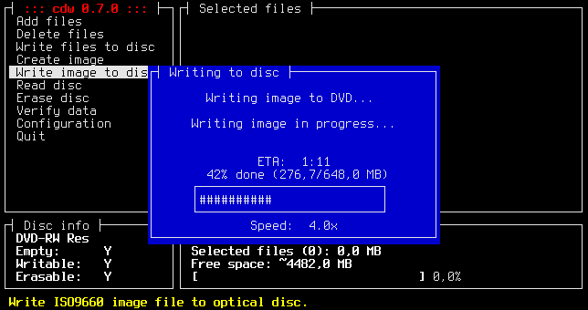

Запись образа на CD-R или CD-RW диск:
cdrecord -v -eject speed=10 dev=/dev/cdrom ~/disc.iso
Если speed=0 программа сама выбирает подходящую скорость.
CD-RW диск необходимо сначала очистить:
cdrecord -v blank=fast dev=/dev/cdrom
blank=all - очистить весь диск
blank=fast - быстрая очистка диска
blank=session - очистить последнюю сессию
blank=unclose - открыть последнюю записанную сессию
Создание образа диска:
mkisofs -o test.iso -Jrv -V test_disk /home/user/something
В этом примере следующие обозначения:
-o - имя создаваемого iso-файла (test.iso)
-J - используем записи Joliet для совместимости с Windows
-r - Rock Ridge расширение для совсестимости с unix (Сохраняет права на файлы)
-v - выводить информацию о выполняемом процессе
-V - указываем имя тома (test_disk); Это имя будет отображаться при просмотре в Windows
Запись DVD-R/RW дисков:
Очищаем DVD-RW диск:
dvd+rw-format -f /dev/cdrom
Запись образа:
growisofs -Z /dev/cdrom=image.iso
Запись файлов из каталога:
growisofs -Z /dev/cdrom -R -J /home/user/something
Параметр -Z применяется, если мы начинаем новую сессию. Чтобы добавить другую сессию, вместо -Z пишем параметр -M.
Утилита CDW
Существует ncurses-фронтенд для этих программ - CDW. Позволяет в удобной форме создавать образы и записывать диски.
